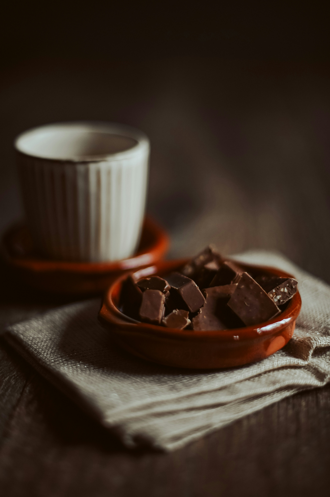

Mousse au chocolat minimaliste
— simple, douce, efficace.
Une mousse au chocolat, c’est un peu comme un bon design — minimaliste, mais chaque détail compte. Trois ingrédients, quelques gestes précis, et la magie opère. Cette recette, c’est celle que je fais quand j’ai besoin de couper du code et de plonger dans quelque chose de plus… sensoriel.

Ingrédients (pour 4 personnes) :
- 200 g de chocolat noir (70 % minimum, c’est lui la star)
- 6 œufs frais (jaunes et blancs séparés)
- 1 pincée de sel
- (optionnel) un filet de café noir ou une pointe de vanille pour la profondeur
1. Fais fondre doucement le chocolat.
Au bain-marie ou à feu très doux — comme quand tu ajustes les marges d’un layout : patience et précision.
2. Ajoute les jaunes d’œufs.
Hors du feu, un à un, en mélangeant bien. Le mélange devient lisse, brillant, cohérent — comme un code bien indenté.
3. Monte les blancs en neige.
Avec une pincée de sel. L’objectif : une texture aérienne, comme une UI légère où tout respire.
4. Incorpore-les au chocolat.
Petit à petit, sans casser la mousse. Ce moment est presque méditatif : tout est dans le geste.
5. Laisse reposer.
4 heures minimum au réfrigérateur. Oui, comme un bon projet : il faut savoir attendre le bon moment pour le présenter.